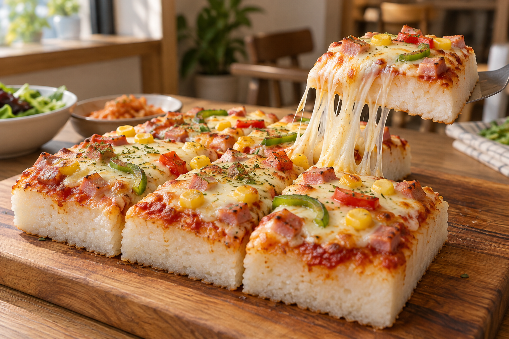
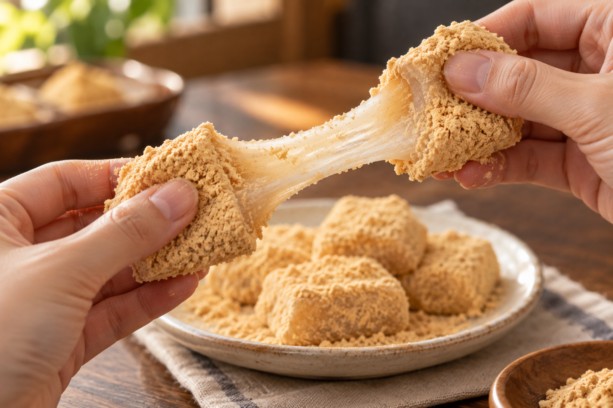
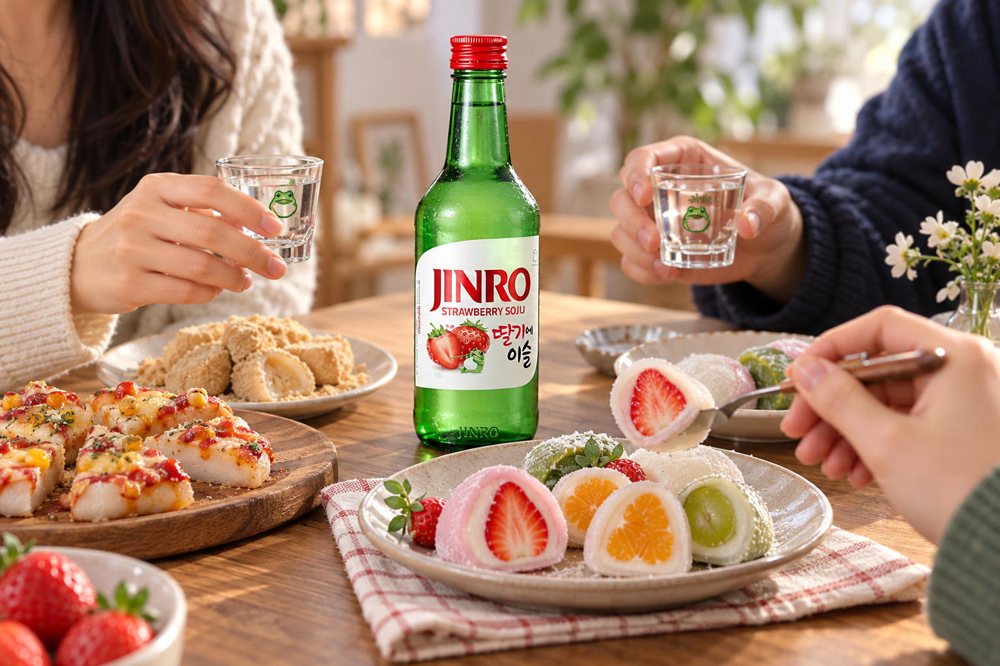

K-Trend Alert: Korea’s Traditional Rice Cakes Are Getting a Makeover
From pizza seolgi to fruit-filled rice cakes, tteok is the dessert young Koreans are lining up for right now.
What comes to mind when you think of Korean desserts? Bingsu, cream-filled buns, or whatever went viral on your feed last week?
This fall, the answer in Korea is a lot more traditional: tteok, or Korean rice cake. Once mostly saved for holidays and family gatherings, rice cakes are now the dessert young Koreans line up for.
The buzz is easy to see. Social media mentions of pizza seolgi jumped from fewer than 100 in April to more than 10,000 in September, and Korean media have started calling rice cake shop tours "tteok pilgrimages."
Here is what is driving the trend, and what to try first.

1. Pizza Seolgi: A Korean Rice Cake That Eats Like Pizza
Seolgi is a traditional steamed rice cake made from rice flour, known for its soft, light texture.
Pizza seolgi takes that plain white rice cake and tops it like a pizza, with tomato sauce, cheese and ham. It is cut into squares, so it is easy to share.
The result looks familiar and new at the same time: soft rice cake, melted cheese and savory toppings in one bite.
If you thought rice cakes only came with bean powder or red bean filling, this one is worth a try. Some Korean convenience stores have even started selling their own pizza-style rice cakes.

2. Fruit Rice Cakes: The Treat Behind the Open-Run Lines
Fruit rice cakes are the other big name in Korea’s tteok trend. A whole piece of fresh fruit is wrapped in a layer of filling and a soft glutinous rice skin.
Hanjeongseon, a rice cake shop known for its fruit rice cakes, has become one of the most talked-about spots of the trend, with lines forming as soon as the doors open.
Cut one in half and you will see why it does so well online. The bright fruit and soft white layers make a clean cross-section that looks great in photos.
Strawberry and mango are the classics, and new versions with different creams and fillings keep showing up.

3. Jjondeuk: Why Young Koreans Love Chewy Textures
If you follow Korean dessert trends, you have probably seen one word everywhere: jjondeuk. It describes a texture that is soft, sticky and bouncy all at once.
Rice cakes come with a few texture words of their own:
Jjondeuk-jjondeuk: soft, sticky and springy
Malang-malang: soft and tender
Jjolgit-jjolgit: pleasantly chewy
That range is what makes rice cakes so easy to remix. Add fruit and it becomes a light dessert. Add cheese and it turns savory. Keep the nuts and roasted soybean powder and you get the classic flavor.
For many young Koreans, the fun is not about one specific dessert. It is about finding the next texture to try.

4. From Tradition to Trend: How Rice Cakes Found New Fans
In Korea, tteok has long been part of big moments like Lunar New Year, Chuseok, weddings and birthdays. Each type has its own way of being made and its own meaning.
White baekseolgi is often linked to celebrations and good wishes, while injeolmi is loved for its chewy texture and roasted soybean powder.
The new wave does not replace these classics. It adds new flavors and new looks to something people already know, from neighborhood rice cake shops to the desserts filling Korean social feeds.

5. Try Korea’s Rice Cake Trend with JINRO Strawberry
Many Korean grocery stores and dessert shops outside Korea already carry rice cakes. Pick up a few different types and see which texture you like most.
If you would like to pair them with JINRO, JINRO Strawberry is an easy match. Its sweet strawberry flavor goes well with fruit rice cakes and adds a fresh contrast to the savory cheese of pizza seolgi. Serve it chilled.

What will Korea’s next big food trend be? Keep following JINRO to find out first.
To discover more Korean food stories and JINRO pairings, visit JINRO Global’s official Instagram, Facebook, and YouTube.
This article is intended for readers of legal drinking age. Please enjoy JINRO responsibly and in moderation, and never drink and drive.